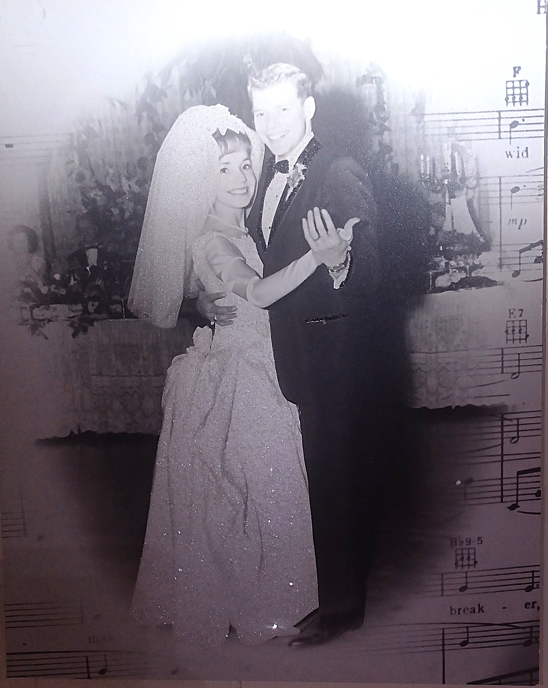
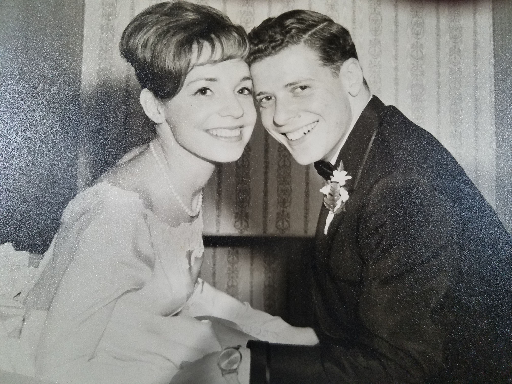

Fresh, handmade baking
Every order is prepared from scratch, so flavors stay bright, textures stay tender, and each tray feels like it was made just for you.
We’re a Santa Clara cottage bakery creating warm breads, nostalgic Jewish pastries, and sweet treats with the kind of care you can taste. Every loaf, cookie, and cake is made fresh, by hand, and with a whole lot of love.
Our goal is simple: bake food that feels homemade, comforting, and memorable — whether you’re ordering a baker’s dozen of bagels or a special cake for family and friends.
Both Bruce and I were born in the Bronx, one of the boroughs of New York City. Bruce grew up on the West Side and I grew up on the South, and we were connected by the Cross Bronx Expressway.
We met in 1963 and married in 1965. We both loved home baked bread and goodies from the bakeries near our homes — Snowflake Bakery for Bruce and Zarro’s for me. We moved to California in 1986 and missed the taste of East Coast bakeries so much that I began collecting recipes to mirror those flavors at home. And it worked — pretty successfully.
We have two married adult children who luckily live in northern California right now, and we are able to see them.
We have been married for 61 years. Not all our years were happy, but we both laugh and communicate a lot. Some years were terrible, some were okay, some were really great and others were very challenging. But we worked at it (we are soooo different) and still have chemistry; that helped us pull through. After 61 years, we are still together, and this past year we decided my baking was good enough to sell to the public and hopefully bring in extra cash. Hence, the B & K Bakery was born.
We bake all our goods in our home kitchen. I am the baker while Bruce works with me as the Veteran CFO of our bakery and assists me. We are registered with the County of Santa Clara and complied with all the health and a myriad of other requirements to be a Cottage bakery.





“You can taste the love!” is more than a slogan to us. It describes how we bake — with patience, pride, and ingredients chosen to make every bite feel special.
From braided challah to rugelach, our menu brings together tradition and the joy of sharing something homemade.

We’re not a factory bakery. We bake in small batches, pay attention to the little details, and keep things personal from the first inquiry to the final box.
Every order is prepared from scratch, so flavors stay bright, textures stay tender, and each tray feels like it was made just for you.
Our menu features babka, challah, bagels, bialys, rugelach, cookies, macarons, and coffee cake — baked with care and plenty of character.
Whether it’s a family gathering, a holiday table, or a treat for yourself, our bakery is built around food that brings people together.
Browse the menu, choose your favorites, and send an order request. We’ll take care of the rest.